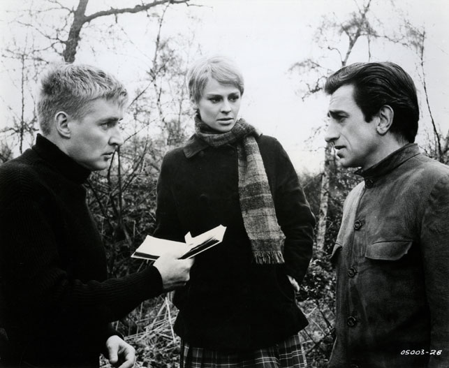

We will face this reality honestly and learn how to live with it.
We realize that the current and upcoming crises cannot be reduced to a set of problems in need of technological or political solutions. We believe that the roots of the current and upcoming crises lie in the stories we have been telling ourselves.
| Personal Responsibility | Political Action | Systemic Change |
Collapse won't be addressed by buying a Prius, signing a treaty, or turning off the air-conditioning. The biggest problem we face is a philosophical one: understanding that this civilization is already dead. The sooner we confront this problem, and the sooner we realize there's nothing we can do to save ourselves, the sooner we can get down to the hard work of adapting, with mortal humility, to our new reality.
An Adaptationist is someone who understands and respects the science, and recognises, based on history, that humanity has not cooperated on what what needed to be done to address climate change. Adaptationists, in realising this, make active changes in their own lives & within their own local community because that is all they have left.
The myth of progress tells us that we are destined for greatness, that we began grunting in the primeval swamps, as a humble part of something called nature, which we have now triumphantly subdued.
It came to be understood among the people of our culture that life in the wild was governed by a single, cruel law known as "kill or be killed." In recent decades, ethologists have discovered that this law is a fiction. In fact, a system of laws, universally observed, preserves the tranquility of the wild, protects species and even individuals, and promotes the well-being of the community as a whole. This system of laws has been called, among other things, the peacekeeping law, the law of limited competition, and animal ethics.